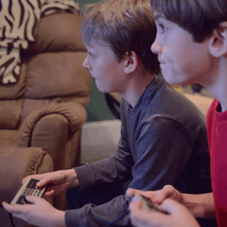

From light and food to singing and dancing, our world is
characterized by phenomena, events, and processes that have a physical
and mental effect on us. Our environment and our experience shape
us—physically and psychologically. As cultural artifacts, video games
work in a similar fashion. Video games are instruments that simulate
how we process the world, i.e. tools testing problem solving and
decision-making skills. Once we understand the physiological and
psychological effects of video game play, we can use these processes to
help us interpret and navigate our world, e.g. constructing beneficial
stratagems for education and public health.
Video games exercise and
train cognitive skills. Cognition is defined as the mental processes
associated with memory, language, perception, attention, problem
solving, decision-making, and reasoning1. Video games create
engaging environments that allow for cognitive
growth and development in mental rotational skills, object location
ability, attention, visual attention, targeting, iconic and verbal
representation of processes, verbal fluency, executive control, and
both short- and long-term memory skills2. Cognition develops
through bottom-up and top-down processes.
The bottom-up process is input and data driven, which involves
perceiving the world, remembering features and characteristics about
it, and navigating the environment. The top-down process applies
previously learned knowledge to affect perception, memory, problem
solving, decision-making, and the like1.
Similarly, video
games incorporate and challenge various
cognitive processes through a cyclical flow of bottom-up and top-down
processing. A player perceives and interacts with the video game
environment—processing bottom-up—and in order to succeed in the game,
s/he must solve problems and use several cognitive skills to
overcome obstacles and challenges—processing top-down. Through their
intrinsic qualities, video games promote cognitive growth and
development.
The brain-mind relationship suggests that physical changes
are occurring in parallel to these mental developments3.
Video games impact human physiology in various physical
ways. For example, they act as powerful stimuli: They can affect stress
levels through increased heart rate and heightened cortisol production
as well as produce pleasurable stimulation in the form of dopamine and
opioid release2,4. Furthermore, traditional games, such as
Ms. Pac-Man, have been
shown to increase heart rate, blood pressure, oxygen consumption, and
energy expenditure5. More physically intensive
video games such as exergames, e.g. Dance Dance Revolution and Wii
Sports, are being used as health tools to increase caloric expenditure
and heart rate6. As well,
Staiano and Calvert have shown that using aerobic exercise through
video game play affects the structure and function of the brain in a
number of ways: It increases cerebral circulation via enhanced
cardiorespiratory functioning, and it also decreases the risk of
disease by providing an enriched environment of increased
neurotransmitters, enhanced physiological and neurological mechanisms,
and healthy molecular and neurochemical changes6. This
is only the tip of the iceberg; it is still unclear how video games
affect human physiology in a comprehensive and temporal manner, e.g.
neuronal communication, hormone interaction, and other physiological
changes over different periods of time.
Sources:
- Goldstein, E. (2011). Cognitve psychology: Connecting mind, research, and everday experience. Belmont, CA: Wadsworth, Cengage Learning.
- Boyan, A., & Sherry, J. (2011). The challenge in creating games for education: Aligning mental models with game models. Child Development Perspectives, 5(2), 82-87.
- Gazzaniga, M., Ivry, R., & Mangun, G. (2009). Cognitive neuroscience: The biology of the mind. New York, NY: W. W. Norton & Company, Inc.
- Koepp, M., Gun, R., Lawrence, A., Cunningham, V., Dagher, A., Jones, T., & Grasby, P. (1998). Evidence for striatal dopamine release during a video game. Letters to Nature, 393, 2666-268. doi:10.1038/30498
- Segal, K. R., & Dietz, W. H. (1991). Physiologic responses to playing a video game. American Journal of Diseases of Children, 145, 1034-1036. doi: 10.1001/archpedi.1991.02160090086030
- Staiano, A., & Calvert, S. (2011). Exergames for physical education courses: Physical, social, and cognitive benefits. Child Development Perspectives, 5, 93-98.
| Holistic Gaming | |
|---|---|
| Games & Play  |
Video Games
& Video Game Play  |
Educational
Games |
Learning Tools |
| Physical & Psychological Effects of Video Game Play | |
Brain-Mind
Relationship |
The Good |
| The Bad |
The Ugly
Duckling |
| A Future for Holistic Gaming | |
Research Tools |
Educational
Value |
| Prevention
& Treatment Strategies  |
A Complete
Systems Learning Game  |